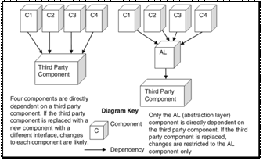

Paper Title :
A REVIEW ON SOFTWARE ARCHITECTURE
Abstract
Software Architecture is a sub discipline of Software Engineering. The term software architecture intuitively denotes the high level structures of a software system. It can be defined as the set of structures needed to reason about the software system, which comprise the software elements, the relations between them, and the properties of both elements and relations. The term software architecture also denotes the set of practices used to select, define or design a software architecture. Finally, the term often denotes the documentation of a system's "software architecture". Documenting software architecture facilitates communication between stakeholders, captures early decisions about the high-level design, and allows reuse of design components between projects.
Author:
Subodh Prasad
Paper Transcript of Paper Titled :
A REVIEW ON SOFTWARE ARCHITECTURE
A Review on Software Architecture
Subodh Prasad
Information Technology Department
Amrapali Institute of Technology & Sciences
Haldwani, Uttarakhand, India
Abstract— Software Architecture is a sub discipline of Software Engineering. The term software architecture intuitively denotes the high level structures of a software system. It can be defined as the set of structures needed to reason about the software system, which comprise the software elements, the relations between them, and the properties of both elements and relations. The term software architecture also denotes the set of practices used to select, define or design a software architecture. Finally, the term often denotes the documentation of a system's "software architecture". Documenting software architecture facilitates communication between stakeholders, captures early decisions about the high-level design, and allows reuse of design components between projects.
Keywords-Software Architecture; Components; Characteristics (key words)
Introduction
To date there is still no agreement on the precise definition of software architecture. Opinions vary as to what is architectural in the software world like:
i. Overall, macroscopic system structure; this refers to architecture as a higher level abstraction of a software system that consists of high-level components and connectors, as opposed to implementation details.
ii. The important stuff - whatever that is; this refers to the fact that software architects should concern themselves with those decisions that have high impact on the system and its stakeholders—which may include apparently low-level details.
iii. That which is fundamental to understanding a system in its environment.
iv. Things that people perceive as hard to change; since designing the architecture takes place at the beginning of a software system's lifecycle, the architect should focus on decisions that “have to” be right the first time, since reversing such decisions may be impossible or prohibitively expensive.
v. A set of architectural design decisions; software architecture should not be considered merely a set of models or structures, but should include the decisions that lead to these particular structures, and the rationale behind them. This insight has led to substantial research into software architecture knowledge management.
There is no sharp distinction between software architecture versus design and requirements engineering. They are all part of a “chain of intentionality” from high-level intentions to low-level details..
Software architecture characteristics
Software architecture exhibits the following characteristics.
i. Multitude of stakeholders: Software systems have to cater to a variety of stakeholders such as business managers, owners, users and operators. These stakeholders all have their own concerns with respect to the system. Balancing these concerns and demonstrating how they are addressed is part of designing the system. This implies that architecture involves dealing with a broad variety of concerns and stakeholders, and has a multidisciplinary nature.
ii. Separation of concerns: The established way for architects to reduce complexity is by separating the concerns that drive the design. Architecture documentation shows that all stakeholder concerns are addressed by modelling and describing the architecture from separate points of view associated with the various stakeholder concerns. These separate descriptions are called architectural views.
iii. Quality-driven: Classical software design approaches like the Jackson Structured Programming were driven by required functionality and the flow of data through the system, but the current insight is that the architecture of a software system is more closely related to its quality attributes such as fault-tolerance, backward compatibility, extensibility, reliability, maintainability, availability, security, usability, and other such – ilities. Stakeholder concerns often translate into requirements on these quality attributes, which are variously called non-functional requirements, extra-functional requirements, system quality requirements or constraints.
iv. Recurring styles: Like building architecture, the software architecture discipline has developed standard ways to address recurring concerns. These “standard ways” are called by various names at various levels of abstraction. Common terms for recurring solutions are architectural style, strategy or tactic, reference architecture and architectural pattern.
v. Conceptual Integrity: A term introduced by Fred Brooks in The Mythical Man-Month to denote the idea that the architecture of a software system represents an overall vision of what it should do and how it should do it. This vision should be separated from its implementation. The architect assumes the role of “keeper of the vision”, making sure that additions to the system are in line with the architecture, hence preserving conceptual integrity.
Architecture Defines Structure
A lot of time of any software architect gets into how to partition any particular application into different coherent sets of interrelated components, modules, objects or any other unit of software partitioning. The architecture of the resulting software must be kept in mind at all the times, that, what are functionalities that the software promises to provide in the future, how the resultant software will be better, efficient and error free.
Take an example: An organization has a software requirement which takes in the data from various web servers across the globe. This data has then to be compiled to form metadata at one final destination. This compiled data implies some information and this information finally developed has to provide the next task for all the web server managers across the globe. This task is repeated in that particular organization every day. Such kind of data interchanging and data implications lead to various kinds of constraints like; structural and functional constraints. Other important factors include application update in one place at one time, multiple web server dependency may lead to violation of ACID property of database. So all these factors have to be kept in mind while the application is in the development phase and modules are created for the development. It is the responsibility of the software architect to analyse all such future constraints and assign responsibilities to each constituent component. In partitioning an application, the architect assigns responsibilities to each constituent component. These responsibilities define the tasks a component can be relied upon to perform within the application.
By using the above mentioned method it is ensured that each component plays a specific role in the application, and the overall component ensemble that comprises the architecture collaborates to provide the required functionality. Responsibility-driven design is a technique from object-orientation that can be used effectively to help define the key components in any architecture. It provides a method based on informal tools and techniques that emphasize architectural and behavioral modelling using objects, responsibilities and collaborations. A key structural issue for nearly all applications is minimizing dependencies between building blocks or modules a.k.a. components, creating as much loosely coupled architecture as possible from a set of highly cohesive components. Such modules ensure that the change in one module does not induce a change in the other module and hence these modules are secure to be worked upon and worked with. But when the change in one module or component induces a change in other one it is said to be a dependency. By removing unnecessary dependencies, changes are not propagated throughout the architecture

Fig 1.2: Different types of component/module dependencies.
Excessive dependencies pose a big problem when it comes to creating a good architecture as the future change in an implied module will lead to a change in most of the implying module. So, excessive dependency makes it difficult, expensive, erroneous, tedious and time-consuming to make changes to system.
Architecture Specifies Component Communication
Whenever the development phase of any software is going on, it is divided into modules as discussed already. This division into modules, makes the individual module dataflow and communication flow a difficult issue. Therefore it has to be seen that the modules can communicate with each other at the required point of time. As well as the dataflow in between the modules has to be taken care of. If the modules can communicate between each other and transfer data amongst each other at all points of time after the development of the software, the development is said to be a success.
To carry out such communication and data flow between modules, several types of methods can be used like: They may execute in different threads or processes, and communicate through synchronization mechanisms. Or multiple components may need to be simultaneously informed when an event occurs in the application’s environment. There are many other possibilities as well. Discussing further about communication and data flow between modules, it can be said that a particular class of development takes care of it. This particular class of software is called “architectural patterns” or “architectural styles”. These patterns are essentially reusable architectural blueprints that describe the structure and interaction between collections of participating components. Each pattern has well-known characteristics that make it appropriate to use in satisfying particular types of requirements. For example, the client–server pattern has several useful characteristics, such as synchronous request–reply communications from client to server, and servers supporting one or more clients through a published interface. Optionally, clients may establish sessions with servers, which may maintain state about their connected clients. Client–server architectures must also provide a mechanism for clients to locate servers, handle errors, and optionally provide security on server access. All these issues are addressed in the client–server architecture pattern.
The power of patterns comes from the development objectives, utility, robustness, ability to convey design information as well as data information within the components / modules. Patterns are proven to work. If used appropriately in an architecture, you leverage existing design knowledge by using patterns. Large systems tend to use multiple patterns, combined in ways that satisfy the architecture requirements. When an architecture is based around patterns, it also becomes easy for team members to understand a design, as the pattern infers component structure, communications and abstract mechanisms that must be provided. When someone tells me their system is based on a three-tier client–server architecture, I know immediately a considerable amount about their design. This is a very powerful communication mechanism indeed.
Architecture Addresses Nonfunctional Requirements
Nonfunctional requirements are those requirements which don’t appear in use cases. They are always concerned with how the application provides the required functionality. There are three distinct areas of nonfunctional requirements:
a. Technical constraints: They constrain design options by specifying certain technologies that the application must use. “We only have Java developers, so we must develop in Java”. “The existing database runs on Windows XP only”. These are usually nonnegotiable.
b. Business constraints: These too constraint design options, but for business, not technical reasons. For example, “In order to widen our potential customer base, we must interface with XYZ tools”. Another example is “The supplier of our middleware has raised prices prohibitively, so we’re moving to an open source version”. Most of the time, these too are nonnegotiable.
c. Quality attributes: These define an application’s requirements in terms of scalability, availability, ease of change, portability, usability, performance, and soon. Quality attributes address issues of concern to application users, as well as other stakeholders like the project team itself or the project sponsor.
An application architecture must therefore explicitly address these aspects of the design. Architects need to understand the functional requirements, and create a platform that supports these and simultaneously satisfies the nonfunctional requirements
References
F. Buschmann, R. Meunier, H. Rohnert, P. Sommerlad, M. Stal,. Pattern-Oriented Software Architecture, Volume 1: A System of Patterns. John Wiley & Sons, 1996.
D. Schmidt, M. Stal, H. Rohnert, F. Buschmann. Pattern-Oriented Software Architecture, Volume 2, Patterns for Concurrent and Networked Objects. John Wiley & Sons, 2000.
M. Fowler. Patterns of Enterprise Application Architecture. Addison-Wesley, 2002.
G. Hohpe, B. Woolf. Enterprise Integration Patterns: Designing, Building, and Deploying Messaging Solutions. Addison-Wesley, 2003.
P. Tran, J. Gosper, I. Gorton. Evaluating the Sustained Performance of COTS-based Messaging Systems. in Software Testing, Verification and Reliability, vol 13, pp 229–240, Wiley and Sons, 2003
I. Gorton, A. Liu. Performance Evaluation of Alternative Component Architectures for Enterprise JavaBean Applications, in IEEE Internet Computing, vol.7, no. 3, pages 18–23, 2003.
A. Liu, I. Gorton. Accelerating COTS Middleware Technology Acquisition: the i-MATE Process. in IEEE Software, pages 72–79,volume 20, no. 2, March/April 2003.